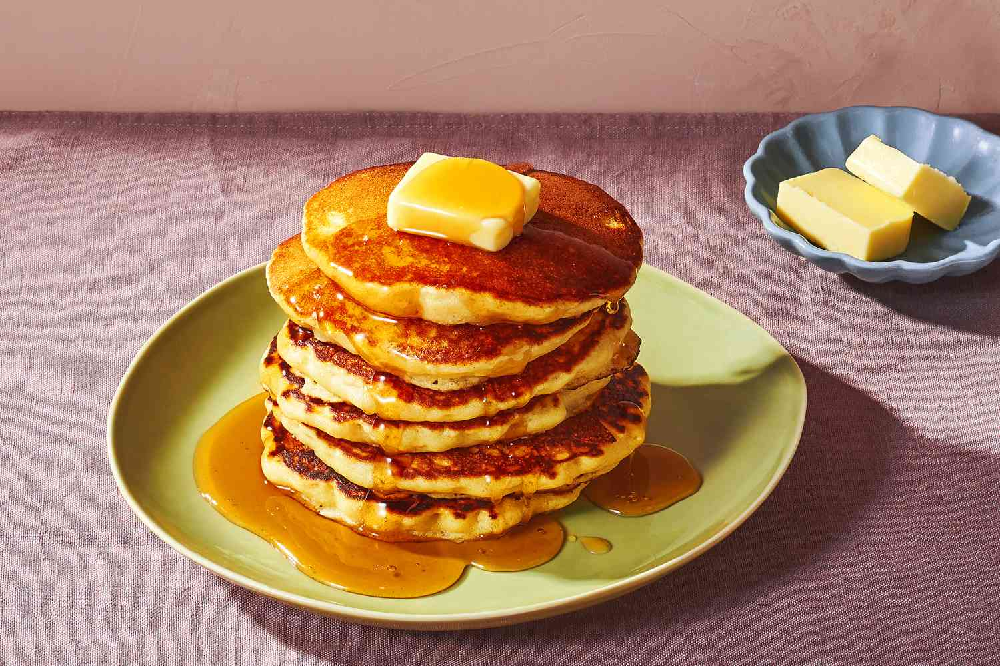

Home
Pancakes

Description
These classic fluffy pancakes are a delicious way to start your morning. They're light, buttery, and easy to make from scratch.
Perfect for breakfast or brunch, and you can top them with syrup, fruit, or whipped cream.
Ingredients
- 1 cup all-purpose flour
- 2 tablespoons sugar
- 2 teaspoons baking powder
- 1/2 teaspoon salt
- 1 cup milk
- 1 egg
- 2 tablespoons melted butter
- 1 teaspoon vanilla extract (optional)
Steps
- In a bowl, mix flour, sugar, baking powder, and salt.
- In another bowl, whisk milk, egg, melted butter, and vanilla.
- Combine the wet and dry ingredients. Stir until just mixed (do not overmix).
- Heat a lightly greased skillet over medium heat.